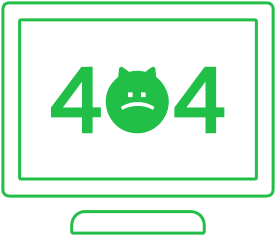

<body class="bg-white text-[#111] antialiased">
  <main class="min-h-screen max-w-[1120px] mx-auto px-8 py-10 grid md:grid-cols-2 items-center gap-10">
    <!-- 왼쪽 일러스트 - 이미지로 교체 -->
    <section aria-hidden="true">
      <picture>
        <source srcset="../images/icon-404.png" type="image/webp" />
        
      </picture>
    </section>

    <!-- 오른쪽 텍스트/버튼 -->
    <section role="region" aria-labelledby="title">
      <h1 id="title"
          class="m-0 mb-4 font-extrabold leading-tight text-4xl md:text-5xl whitespace-nowrap">
        페이지를 찾을 수 없습니다.
      </h1>
      <p class="text-[#666] leading-8 mb-8 text-base md:text-lg">
        페이지가 존재하지 않거나 사용할 수 없는 페이지입니다.<br/>
        웹 주소가 올바른지 확인해 주세요.
      </p>

      <div class="flex flex-wrap gap-4">
        <a href="/"
           class="h-[72px] px-16 min-w-[220px] rounded-lg font-bold text-xl inline-flex items-center justify-center
                  bg-[#03C75A] text-white shadow-[0_6px_16px_rgba(3,199,90,.18)]
                  hover:shadow-[0_8px_22px_rgba(3,199,90,.22)] active:translate-y-[1px] transition">
          메인으로
        </a>

        <a href="#" data-back
           class="h-[72px] px-12 rounded-lg font-bold text-xl inline-flex items-center justify-center
                  bg-white text-[#555] border border-[#D8DDE3] hover:border-[#cfd6dd]
                  active:translate-y-[1px] transition">
          이전 페이지
        </a>
      </div>
    </section>
  </main>
</body>